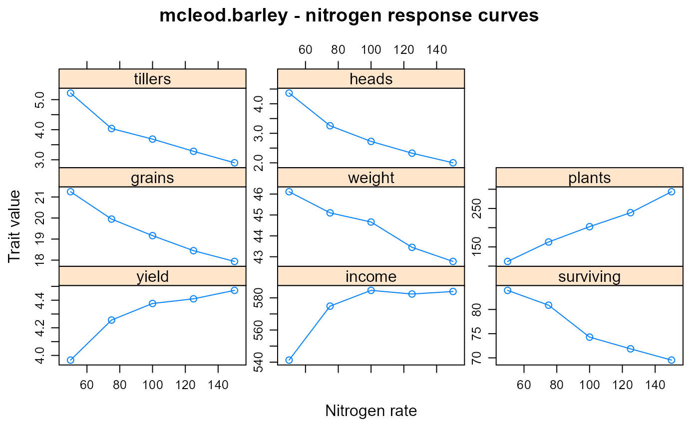

mcleod.barley.RdYield and yield components for barley with different seeding rates.
A data frame with 40 observations on the following 10 variables.
yearyear, numeric
sitesite factor
raterate, numeric
plantsplants per sq meter
tillerstillers per plant
headsheads per plant
survivingpercent surviving tillers
grainsgrains per head
weightweight of 1000 grains
yieldyield tons/hectare
Trials were conducted at 5 sites, 3 years in South Canterbury. (not all sites in every year). Values are the average of 6 blocks. In 1974 there was a severe drought. The other years had favorable growing conditions.
C. C. McLeod (1982). Effects of rates of seeding on barley sown for grain. New Zealand Journal of Experimental Agriculture, 10, 133-136. https://doi.org/10.1080/03015521.1982.10427857.
Maindonald (1992).
library(agridat) data(mcleod.barley) dat <- mcleod.barley # Table 3 of McLeod. Across-environment means by planting rate d1 <- aggregate(cbind(plants, tillers, heads, surviving, grains, weight, yield) ~ rate, dat, FUN=mean) # Calculate income based on seed cost of $280/ton, grain $140/ton. d1 <- transform(d1, income=140*yield-280*rate/1000) signif(d1,3)#> rate plants tillers heads surviving grains weight yield income #> 1 50 112 5.22 4.36 84.0 21.2 46.1 3.97 541 #> 2 75 163 4.04 3.26 80.9 20.0 45.1 4.26 575 #> 3 100 203 3.69 2.72 74.3 19.2 44.7 4.38 585 #> 4 125 239 3.28 2.33 71.9 18.4 43.4 4.41 582 #> 5 150 294 2.90 2.00 69.5 17.9 42.8 4.47 584## rate plants tillers heads surviving grains weight yield ## 50 112.12 5.22 4.36 83.95 21.25 46.11 3.97 ## 75 162.75 4.04 3.26 80.89 19.95 45.10 4.26 ## 100 202.62 3.69 2.73 74.29 19.16 44.66 4.38 ## 125 239.00 3.28 2.33 71.86 18.45 43.45 4.41 ## 150 293.62 2.90 2.00 69.54 17.94 42.77 4.47 # Even though tillers/plant, heads/plant, surviving tillers, # grains/head, weight/1000 grains are all decreasing as planting # rate increases, the total yield is still increasing. # But, income peaks around seed rate of 100. libs(lattice) xyplot(yield +income +surviving +grains +weight +plants +tillers +heads ~ rate, data=d1, outer=TRUE, type=c('p','l'), scales=list(y=list(relation="free")), xlab="Nitrogen rate", ylab="Trait value", main="mcleod.barley - nitrogen response curves" )